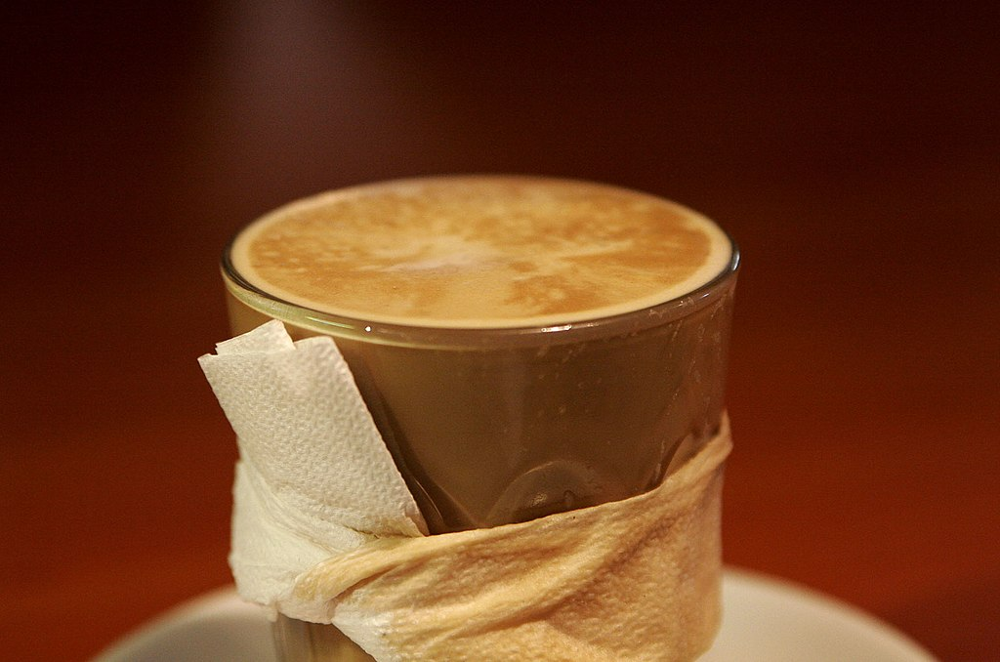

카페라테 (이탈리아어: caffè latte)는 뜨거운 우유를 곁들인 커피 중 하나이다. 카페라테는 전 세계에서 찾아볼 수 있는 커피의 종류중 하나로서 카푸치노와 에스프레소와 함께 가장 흔한 종류 중 하나이기도 하다. ‘카페라테’는 이탈리아어로 ‘우유 커피’를 뜻한다. 불어나 스페인어에서는 그대로 우유를 곁들인 커피라는 문어로 카페라테를 옮겨 적는다. 이탈리아에서 카페라테는 아침에만 먹는 음료이다. 꼭 정해진 것은 아니지만 커피를 증류해서 컵에 우려내 먹은 다음에 데운 우유를 첨가한다. 이탈리아 외에 대개 라테라는 것은 1/3의 에스프레소에 나머지를 우유를 넣는 것으로서 우유가 5mm정도 맨 위에 층을 이루고 있는 것이 특징이며 카푸치노와 흡사하다. 다만 두 종류의 차이는 우유와 에스프레소, 거품의 차이이다.
